The City of the Pomegranate
Granada architecture
On 2 January 1492, Emir Muhammad XI, known to the Spanish as Boabdil, surrendered Granada to Ferdinand and Isabella, ending the last Muslim state in Iberia. The pomegranate, granada in Spanish, is the city's heraldic emblem, which is why it appears on the city's coat of arms and gives the Gate of the Pomegranates its name.
- 15Landmarks
- 1302Oldest · Generalife
- 17 mTallest · Palace of Charles V
- 8Architects
Map and Look Around
Tap a numbered pin to see that landmark from the street with Apple Look Around.
Eat and stay near
Restaurants
Hotels
From Apple Maps. Walking times are estimates from straight-line distance.
Before you go
- Fly intoFederico García Lorca Granada Airport (GRX)
Federico García Lorca Granada Airport lies near Chauchina and Santa Fe, about 15 km west of the city. Building started in 1970 and it opened as Granada Airport in 1972. In 2006 it was renamed after the Andalusian poet Federico García Lorca.
- CurrencyEuro (€)
- LanguageSpanish
Spanish (Castilian) is the language of Granada, written in the Latin alphabet with letters such as ñ. Greet people with 'Hola' or 'Buenos días' (good morning), and thank them with 'Gracias'.
- Getting aroundMetro (Light Rail) & Buses
Granada's metro is a single light rail line that opened on 21 September 2017. It runs underground through central Granada and above ground out to Albolote, Maracena and Armilla, serving 26 stations and carrying about 17.3 million passengers in 2025.
- Where to stayFind hotels in Granada on Expedia Compare on Booking.com Vacation rentals on Vrbo
Stamped! may earn a commission when you book through these links.
- Tours and ticketsFind tours in Granada on GetYourGuide More tours on Viator
Skip-the-line tickets and guided tours of the landmarks. Stamped! may earn a commission.
15 landmarks in Granada
-
Photo: Jebulon, CC0, via Wikimedia Commons Alhambra
Sabika Hill, Granada, Spain
The Alhambra is the palace and fortress complex that crowns the Sabika hill above Granada. Muhammad I, founder of the Nasrid dynasty, began it in 1238, but its famous palaces took shape in the 14th century under Yusuf I and Muhammad V, whose Palace of the Lions dates from his second reign (1362–1391). In Nasrid times it was a self-contained city apart from the town below. It is now a UNESCO World Heritage Site and one of Spain's top attractions.
- Built
- 1391
- Style
- Nasrid (Moorish)
- Today
- Monument and museum
-
Photo: Daderot, CC BY-SA 4.0, via Wikimedia Commons Generalife
Alhambra, Granada, Spain
The Generalife was the country estate and summer palace of Granada's Nasrid rulers, set on the hillside just east of the Alhambra. Its oldest decoration suggests it was built by Muhammad II at the end of the 13th century, or possibly by Muhammad III soon after. Its heart is the Patio de la Acequia, a long courtyard garden split by a water channel lined with arching jets. It joined the Alhambra on the UNESCO World Heritage list in 1984.
- Built
- 1302
- Style
- Nasrid (Moorish)
- Today
- Monument and gardens
-
Photo: Superchilum, CC BY-SA 3.0, via Wikimedia Commons Palace of Charles V
Alhambra, Granada, Spain
The Palace of Charles V is a bold Renaissance block placed right in the middle of the Alhambra. Pedro Machuca, who trained in Michelangelo's circle in Rome, designed it for the emperor, and work began in 1527. Its plan, a 63-metre square around a perfectly circular courtyard, had no precedent in Renaissance architecture. Left unfinished after 1637, it stood roofless until 1967. No king ever lived here; today it houses two museums.
- Built
- 1967
- Architect
- Pedro Machuca
- Style
- Renaissance
- Height
- 17 m (56 ft)
- Stories
- 2
- Today
- Museum
-
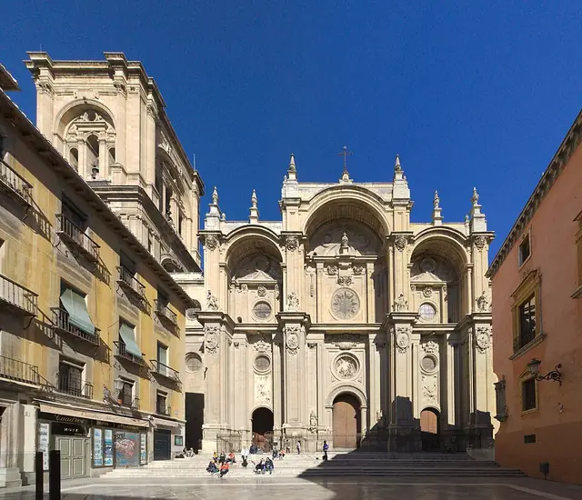
Photo: Ingo Mehling, CC BY-SA 4.0, via Wikimedia Commons Granada Cathedral
Gran Vía de Colón 5, Granada, Spain
Granada Cathedral rose on the site of the city's main mosque after the Christian conquest of 1492. Enrique Egas laid the foundations from 1518 in Gothic style, but from 1529 Diego de Siloé spent nearly four decades turning it into a Renaissance masterpiece, pairing a domed chapel with a five-aisled Gothic plan. Juan de Maeda and others carried on, and it was finally completed in 1704. The towers planned for its facade were never fully built.
- Built
- 1704
- Architect
- Enrique Egas, Diego de Siloé, Juan de Maeda
- Style
- Renaissance, Baroque
- Today
- Cathedral
-
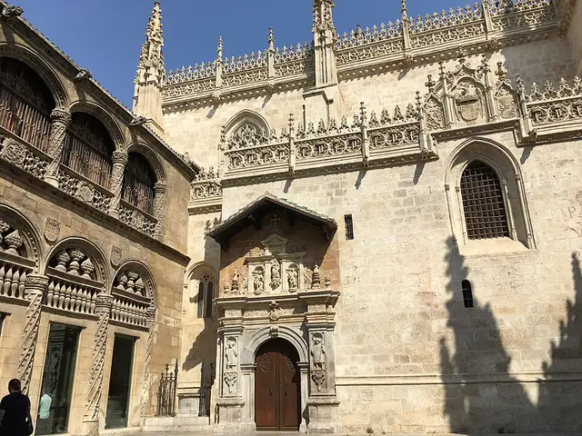
Photo: Heparina1985, CC BY-SA 4.0, via Wikimedia Commons Royal Chapel
Calle Oficios, Granada, Spain
The Royal Chapel is the resting place of Isabella I and Ferdinand II, the Catholic Monarchs who took Granada in 1492. They ordered it in a charter of 1504, and it was built between 1505 and 1517 under Enrique Egas in the Isabelline Gothic style, the final flowering of Spanish Gothic. It was the royal family's mausoleum until Philip II founded El Escorial, and it still displays art and treasures linked to Queen Isabella.
- Built
- 1517
- Architect
- Enrique Egas
- Style
- Isabelline Gothic
- Today
- Chapel and museum
-
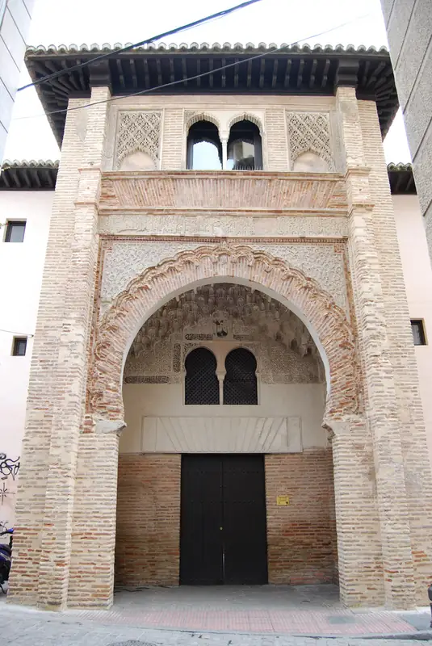
Photo: José Sabater Montes, CC BY-SA 2.0, via Wikimedia Commons Corral del Carbón
Calle Mariana Pineda, Granada, Spain
The Corral del Carbón is the only Nasrid-era funduq, a merchants' inn and warehouse, still standing in the Iberian Peninsula. Built in the early 14th century as al-Funduq al-Jadida, the New Inn, it housed traders and their goods around a central courtyard. Its entrance arch is crowned by muqarnas vaulting. After 1531 it became a theatre courtyard, then tenement housing, and later a place to weigh and store coal, which gave it today's name.
- Built
- 1336
- Style
- Nasrid (Moorish)
- Today
- Historic monument
-
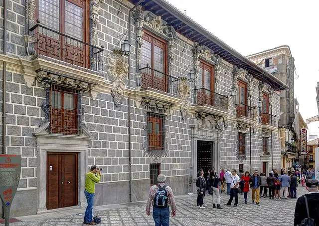
Photo: Berthold Werner, CC BY-SA 3.0, via Wikimedia Commons Madrasa of Granada
Calle Oficios 14, Granada, Spain
The Madrasa of Granada was founded in 1349 by the Nasrid sultan Yusuf I as a college beside the city's main mosque. After 1500 it served as the city hall, and between 1722 and 1729 most of it was rebuilt as a Baroque building designed by José de Bada. Its 14th-century prayer room with a mihrab survives inside. Today it belongs to the University of Granada and hosts the city's Royal Academy of Fine Arts.
- Built
- 1729
- Architect
- José de Bada
- Style
- Nasrid, Baroque
- Today
- University building
-
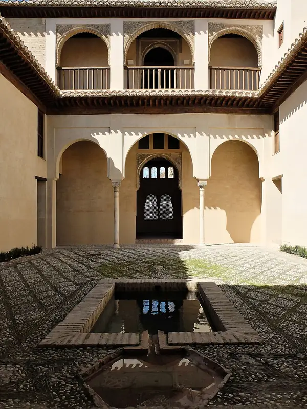
Photo: R Prazeres, CC BY-SA 4.0, via Wikimedia Commons Dar al-Horra
Callejón de las Monjas, Albaicín, Granada, Spain
Dar al-Horra is a small 15th-century Nasrid palace at the top of the Albaicín, probably built under Yusuf III (1408–1417). Its name, House of the Free Woman, honours Aisha al-Horra, mother of Boabdil, the last sultan of Granada, who lived here. The two-storey house wraps around a rectangular courtyard with a small pool. From the early 16th century it formed part of the convent of Santa Isabel la Real, which helped keep it well preserved.
- Built
- 1417
- Style
- Nasrid (Moorish)
- Stories
- 2
- Today
- Historic monument
-
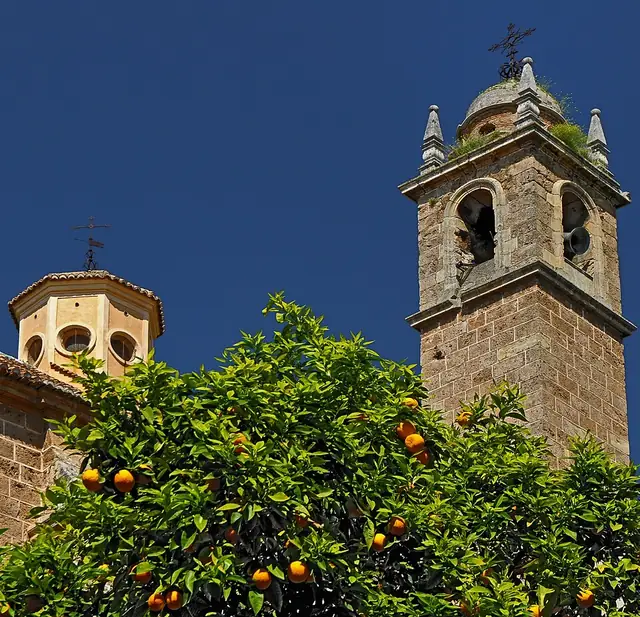
Photo: Ввласенко, CC BY-SA 3.0, via Wikimedia Commons Granada Charterhouse
Calle Profesor Vicente Callao, Granada, Spain
Granada Charterhouse is a Carthusian monastery whose sober exterior hides one of the great Baroque interiors of Spain. Founded in 1506, it was built over some 300 years. Its showpieces are the tabernacle designed by Francisco Hurtado Izquierdo and the famous sacristy, built between 1727 and 1764 by Luis de Arévalo and F. Manuel Vásquez, a dazzling example of the Churrigueresque style. It also displays paintings by the monk Juan Sánchez Cotán.
- Built
- 1764
- Architect
- Francisco Hurtado Izquierdo, Luis de Arévalo
- Style
- Spanish Baroque (Churrigueresque)
- Today
- Monastery and monument
-
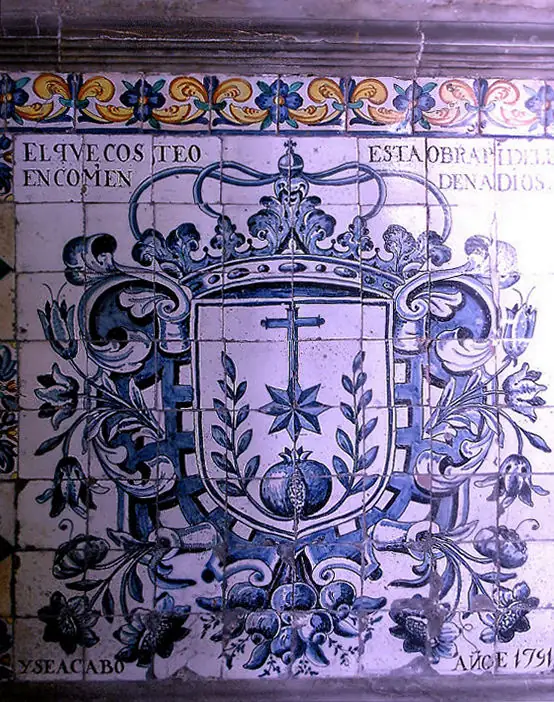
Photo: Carolus, CC BY 4.0, via Wikimedia Commons San Juan de Dios Hospital
Calle San Juan de Dios, Granada, Spain
San Juan de Dios Hospital was founded by John of God, a soldier who became a carer of the poor, and it opened in 1544 outside the old city walls. His followers became the Brothers Hospitallers of Saint John of God, who regard it as their order's first hospital. The Renaissance building was enlarged in the 17th and 18th centuries and is known for its Baroque interior and artworks. The order regained it in 2015.
- Built
- 1544
- Style
- Renaissance
- Today
- Hospital
-
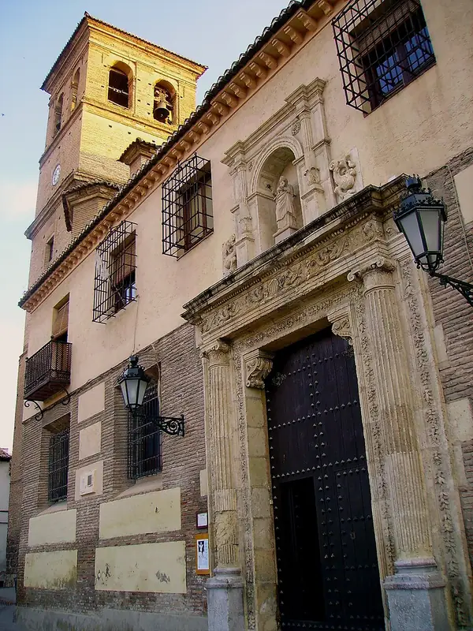
Photo: Giorgiomonteforti, Public domain, via Wikimedia Commons Church of San Salvador
Plaza del Salvador, Albaicín, Granada, Spain
The Church of San Salvador stands on the site of the Great Mosque of the Albaicín, built in the 13th century under Almohad rule. The prayer hall is gone, but the mosque's courtyard with its horseshoe arches survives as part of the church. The present church, mixing Mudéjar and Renaissance features, was begun in 1565 and finished around 1610. It sits on the Plaza del Salvador, off the Cuesta del Chapiz.
- Built
- 1610
- Style
- Mudéjar, Renaissance
- Today
- Church
-
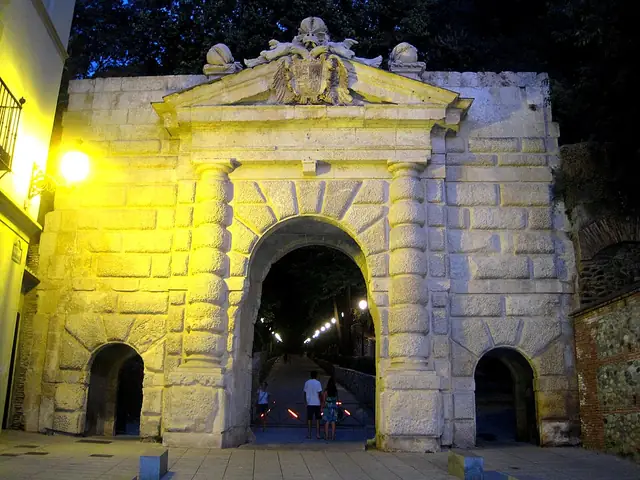
Photo: Roberto Chamoso G, CC BY-SA 3.0 es, via Wikimedia Commons Gate of the Pomegranates
Cuesta de Gomérez, Granada, Spain
The Gate of the Pomegranates is the stately entrance to the woods that climb from the city to the Alhambra. Work began in 1526 to mark the visit of Emperor Charles V after his wedding to Isabella of Portugal, and it replaced an older Islamic gate tower. Built like a Roman triumphal arch in carved stone, it was carried out by Íñigo López with help from Pedro Machuca, architect of the emperor's palace. Three stone pomegranates crown the top.
- Built
- 1526
- Architect
- Íñigo López and Pedro Machuca
- Style
- Renaissance
- Today
- Gate
-
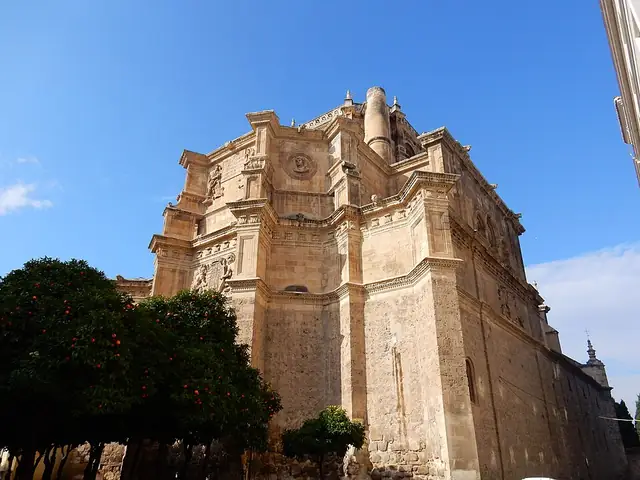
Photo: Brett Hodnett, CC BY-SA 2.0, via Wikimedia Commons Monastery of San Jerónimo
Calle Compás de San Jerónimo, Granada, Spain
The Royal Monastery of San Jerónimo was founded by the Catholic Monarchs during the siege of Granada and moved into the city when building began in 1504. Its church, the first in the world dedicated to the Immaculate Conception, was led by Jacopo Torni and, after 1526, Diego de Siloé. Its main chapel, finished in 1522, holds the tomb of the general known as the Great Captain. The monastery has two Renaissance cloisters, each around a garden.
- Built
- 1522
- Architect
- Diego de Siloé, Jacopo Torni
- Style
- Renaissance
- Today
- Monastery
-
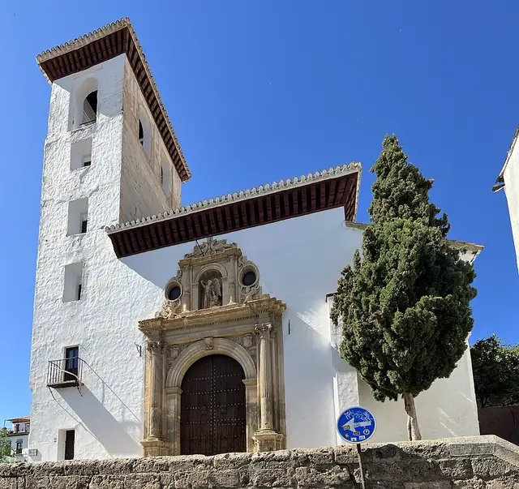
Photo: Chabe01, CC BY-SA 4.0, via Wikimedia Commons Church of San Miguel Bajo
Placeta de San Miguel Bajo, Albaicín, Granada, Spain
The Church of San Miguel Bajo stands on a little square in the Albaicín where the Zirid rulers once had their palace complex. Built between 1528 and 1577 in a blend of Mudéjar and Renaissance styles, it took the place of the neighbourhood's mosque. A 13th-century cistern from that mosque is still set into the facade facing the square, and some of its elements are even older, including reused Roman columns.
- Built
- 1577
- Style
- Mudéjar, Renaissance
- Today
- Church
-
Photo: Jars, CC0, via Wikimedia Commons Parque de las Ciencias
Avenida de la Ciencia, Granada, Spain
The Parque de las Ciencias is Granada's science museum, a 70,000-square-metre campus of pavilions, a planetarium and an observation tower. Its first building, designed by architects Francisco Pastor and Francisco Maeso, opened in May 1995 and still holds the four main exhibition halls and the planetarium. A later expansion, the Macroscopio building, was designed by Carlos Ferrater. It is a member of the European Network of Science Centres and Museums.
- Built
- 1995
- Architect
- Francisco Pastor and Francisco Maeso
- Today
- Science museum

_-_DSC07863_(slightly_cropped_and_sharpened).jpg){kind=link}


.jpg){kind=link}


_3.jpg){kind=link}
.JPG){kind=link}

.jpg){kind=link}
_-_2023-04-26_-_4.jpg){kind=link}

The app's quiz · 10 questions
How well do you know Granada?
The same quiz as in Stamped!: name the landmark, its architect, its style or the year it was finished. Every round is different.
Know Granada well?
Locals know their city best. Suggest a landmark we're missing, a fix to one we have, or share your own photo of one. Every suggestion is checked before it goes into the app.
More cities in Europe
- Amsterdam
- Antwerp
- Athens
- Barcelona
- Bath
- Berlin
- Bilbao
- Brussels
- Budapest
- Copenhagen
- Cork
- Dublin
- Edinburgh
- Florence
- Glasgow
- Hamburg
- Helsinki
- Istanbul
- Kraków
- Lisbon
- London
- Madrid
- Marseille
- Milan
- Munich
- Naples
- Nice
- Oslo
- Paris
- Porto
- Prague
- Reykjavik
- Riga
- Rome
- Rotterdam
- Salzburg
- Seville
- St. Petersburg
- Stockholm
- Tbilisi
- Valencia
- Venice
- Vienna
- Warsaw
- Zurich
Stamp all 15 in Stamped!
Fly through Granada in photoreal 3D, take its 10-question quiz, plan your days and earn a passport stamp at every landmark. Free on iPhone, iPad, Mac and Apple Vision Pro.
Download on theApp StoreEnjoying the guides? Leave a tip to help keep new cities coming.